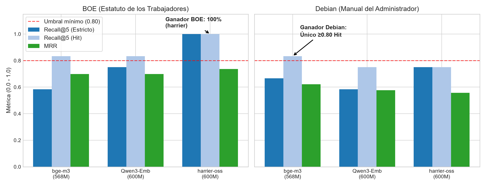
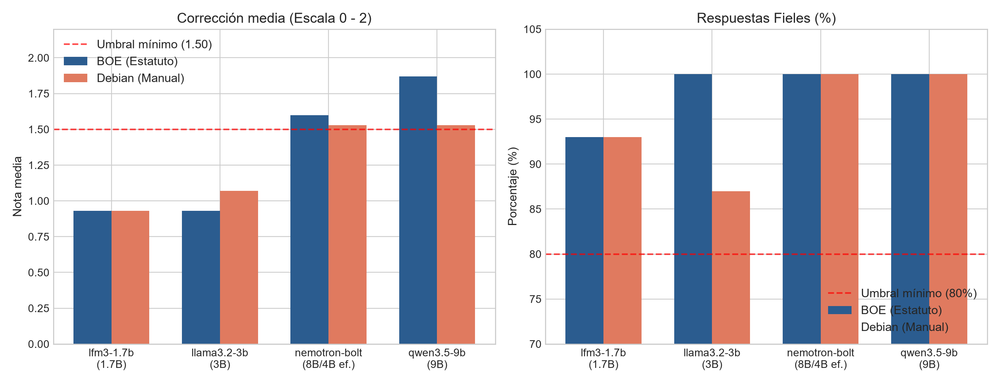
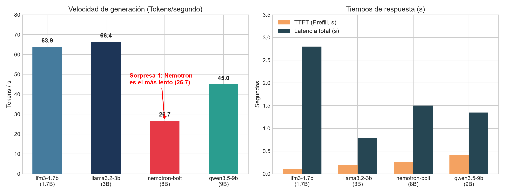
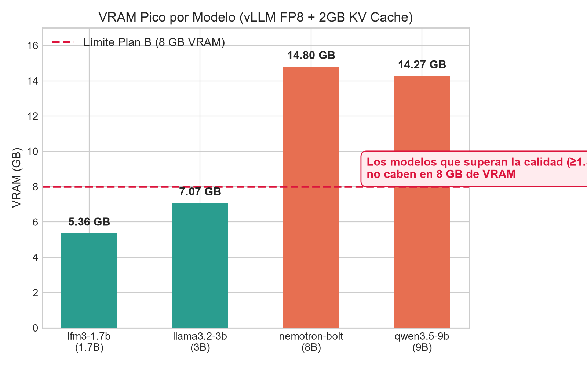
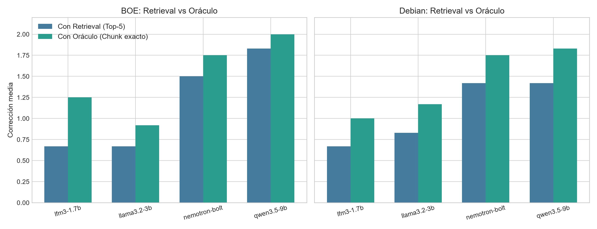

Evaluación Experimental para RAG
Análisis empírico de Retrieval y Generación sobre Normativa Española (BOE) y Documentación Técnica (Debian)
Equipo 1: Nicolás Pascual · Aimar Mora · Íñigo Guzmán
Hardware: NVIDIA A800 40GB (MIG 3g.20gb) · vLLM 0.34.0 FP8
1. Contexto, Escenarios y Stack de Inferencia
Los Dos Corpus Evaluados
- Escenario 1 · BOE (Estatuto de los Trabajadores):
Prosa jurídica homogénea, artículos fuertemente referenciados entre sí, necesidad de citar el artículo exacto sin alucinar. - Escenario 2 · Manual de Debian (Administrador):
Prosa técnica intercalada con comandos de consola, rutas y términos en inglés dentro de la sintaxis en español.
Stack de Inferencia y Justificación
- Motor:
vLLM 0.34.0unificado en Fase 2 y Fase 3. Permite medir VRAM real sin capas intermedias. - Cuantización:
FP8uniforme en todos los modelos (ejecutado como solo-pesos en Ampere). - Aislamiento de Memoria: Misma caché KV fija a 2 GB para todos los LLMs. Mismo top-5 y temperatura 0.0.
- Golden Set: 15 preguntas por escenario (8 directas, 4 combinadas y 3 de abstención sin respuesta).
2. Fase 2: Benchmark de Embeddings
| Escenario | Modelo | Recall@5 (Hit) | MRR | VRAM |
|---|---|---|---|---|
| BOE | bge-m3 | 0.8333 | 0.6983 | 1.89 GB |
| Qwen3-Emb | 0.8333 | 0.6991 | 3.51 GB | |
| harrier-oss-v1 (Ganador) | 1.0000 | 0.7361 | 3.51 GB | |
| Debian | bge-m3 (Ganador) | 0.8333 | 0.6219 | 1.90 GB |
| Qwen3-Emb | 0.7500 | 0.5769 | 3.49 GB | |
| harrier-oss-v1 | 0.7500 | 0.5573 | 3.51 GB |
Hallazgo crítico: El ranking de MTEB no es absoluto. harrier es perfecto en el dominio legal (100% de recuperación), pero cae al 75% en el técnico. bge-m3 es el único que supera el umbral en Debian gracias a su entrenamiento multilingüe técnico.

3. Fase 3: Benchmark de LLMs · Calidad
| Escenario | Modelo | Corrección (0-2) | Fidelidad | Falsas Abst. |
|---|---|---|---|---|
| BOE | lfm3-1.7b | 0.93 | 93 % | 11 de 12 |
| BOE | llama3.2-3b | 0.93 | 100 % | 6 de 12 |
| BOE | nemotron-bolt | 1.60 | 100 % | 1 de 12 |
| BOE | qwen3.5-9b | 1.87 | 100 % | 1 de 12 |
| Debian | lfm3-1.7b | 0.93 | 93 % | 12 de 12 |
| Debian | llama3.2-3b | 1.07 | 87 % | 5 de 12 |
| Debian | nemotron-bolt | 1.53 | 100 % | 3 de 12 |
| Debian | qwen3.5-9b | 1.53 | 100 % | 3 de 12 |
Histeria de abstención: Los modelos de 1.7B y 3B se abstienen masivamente incluso cuando el chunk correcto está en el top-5. En Debian, Nemotron y Qwen empatan en corrección (1.53), pero Nemotron clava el formato de citación técnica al 100% frente al 67% de Qwen.

4. Fase 3: Benchmark de LLMs · Coste y Rendimiento
| Modelo | TTFT (s) | Tokens/s | Latencia | VRAM Pico |
|---|---|---|---|---|
| lfm3-1.7b | 0.10 s | 63.9 tok/s | 2.80 s | 5.36 GB |
| llama3.2-3b | 0.20 s | 66.4 tok/s | 0.78 s | 7.07 GB |
| nemotron-bolt | 0.27 s | 26.7 tok/s | 1.50 s | 14.80 GB |
| qwen3.5-9b | 0.41 s | 45.0 tok/s | 1.35 s | 14.27 GB |
Rendimiento en inferencia:
Llama-3.2-3Bes el más rápido con 66 tok/s y latencia submétrica, pero inservible por su tasa de falsas abstenciones.Qwen3.5-9Bmantiene una velocidad sobresaliente de 45 tok/s ofreciendo la mayor calidad global del benchmark.

5. Recomendaciones Finales por Escenario
harrier-oss-v1 (0.6B) + Qwen3.5-9B (FP8)
- Recuperación perfecta: Recall@5 = 1.0000 (12 de 12 preguntas).
- Máxima precisión: 1.87 / 2.0 en corrección y 100% fidelidad sin alucinaciones.
- Excelente equilibrio: 45 tok/s de velocidad en GPU A800 con 14.3 GB de VRAM pico.
bge-m3 (568M) + Nemotron-Bolt-E4B (FP8)
- Retrieval robusto: bge-m3 es el único embedding que supera el umbral del 80% (0.83).
- Fidelidad y Cita: Nemotron empata en corrección (1.53) y supera a Qwen en citación de sección técnica (100% vs 67%).
- Compromiso: Aceptamos una menor velocidad (26.7 tok/s) a cambio de cero fallos de formato en entorno técnico.
6. Plan B: Restricción a 8 GB de VRAM
Conclusión del Grupo 1
Ninguno de los modelos que supera los umbrales de calidad cabe en 8 GB de VRAM.
Qwen3.5-9B(14.27 GB) yNemotron-Bolt(14.80 GB) se desbordan de largo.LFM3-1.7B(5.36 GB) yLlama-3.2-3B(7.07 GB) sí caben en 8 GB, pero fallan estrepitosamente en calidad (falsas abstenciones del 50% al 92%).
Propuesta de Ingeniería para el Plan B:
Cuantizar Qwen3.5-9B a AWQ 4-bits o GGUF Q4_K_M en llama.cpp (ocupa ~6.5 GB de VRAM total), preservando la capacidad de razonamiento en lugar de desplegar un modelo pequeño deficiente.

7. Lo que no esperábamos (Anomalías Técnicas)
1. La Paradoja de Nemotron
NVIDIA lo anuncia con "4B de parámetros efectivos", pero resultó ser el más lento de todos (26.7 tok/s) y consumió 14.8 GB de VRAM.
Causa: vLLM carga los 8B completos y recurre a kernels menos optimizados (TRITON_ATTN + FP8 Marlin en Ampere).
2. Inconsistencia de Embeddings
Harrier arrasa en BOE (100% Recall) pero es el peor en Debian (75%).
Lección: MTEB no predice el comportamiento ante jerga mixta en inglés/español. Hay que medir siempre sobre el corpus destino.
3. La Bipolaridad de LFM3
Se abstiene en 11 de 12 preguntas por reflejo ("No aparece en el documento")... e inmediatamente después acierta la respuesta.
Diagnóstico: Sensibilidad extrema al ruido. Con el chunk exacto (oráculo) su nota sube de 0.67 a 1.25.

Trazabilidad y Evidencias Obligatorias
- Código 100% reproducible: Scripts automatizados desde la raíz con
uv. - Registros brutos: Logs de VRAM segundo a segundo y respuestas en JSON/CSV.
- Transparencia: Criterios de puntuación documentados en
decision_fase4.md.
¿Preguntas?
Grupo 1 · Repositorio: ai-somorrostro/reto_1_2-2627-Rag-Benchmark (rama grupo-1)